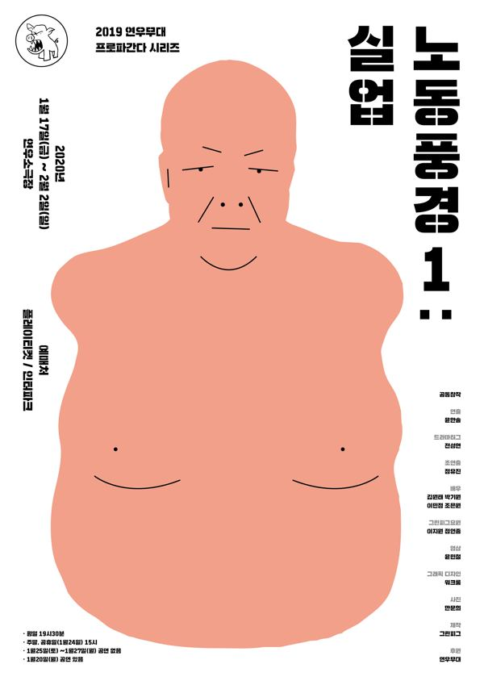

공동창작, 윤한솔 연출, 전성현 드라마터그

'실업'이라는 키워드로 동시대의 노동을 다시 정의한다. 상품으로서의 노동이 아니라 인간, 시민이 되기 위한 권리로서의 노동을 되찾기 위한 질문들을 던진다.
2020.1.17–2.2 / 연우소극장 - 연우무대 프로파간다 시리즈
2020.8.14–21 / 전태일기념관 울림터
공동창작: 그린피그
연출: 윤한솔
드라마터그: 전성현
조연출: 정유진
출연(2020 전태일기념관): 김원태, 박기원, 이민정, 조은원
2020.2.10 관람 후기
이전: 〈딜리버리턴〉 | 다음: 〈동시대인〉
아카이브로 돌아가기
최종 수정 2026.11.9